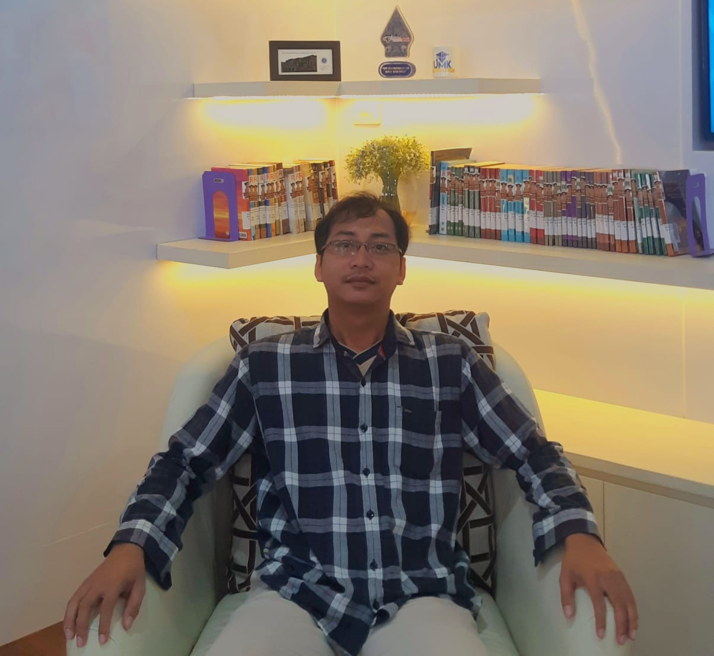

Ghufron Tamami
Sarjana Sistem Informasi Universitas Muria Kudus & Alumni Bangkit Academy 2024 (Machine Learning Cohort). Berfokus pada pembangunan aplikasi web modern, RESTful API, dan penerapan kecerdasan buatan (Machine Learning / Deep Learning).

Mengenal Saya Lebih Dekat
Menggabungkan logika rekayasa perangkat lunak dengan eksplorasi kecerdasan buatan untuk membangun produk digital yang bermanfaat.
Pengembang Berorientasi Solusi & Pembelajar Cepat
Saya adalah Sarjana Sistem Informasi dari Universitas Muria Kudus yang memiliki antusiasme tinggi dalam rekayasa perangkat lunak dan kecerdasan buatan. Selama masa studi, saya telah merancang dan mengimplementasikan berbagai proyek aplikasi web, mulai dari sistem rekomendasi hingga platform pemesanan.
Pengalaman di Bangkit Academy 2024 (Machine Learning Path) yang diselenggarakan oleh Google, GoTo, dan Traveloka semakin memperdalam kompetensi saya dalam data science, pemodelan Deep Learning (LSTM, NLP, CNN), serta integrasi model prediktif ke dalam aplikasi produksi.
Fullstack Web
Membangun web terstruktur dengan PHP, Laravel, JavaScript, HTML5/CSS3, dan database MySQL.
Machine Learning & NLP
Pengembangan model AI dengan Python, analisis sentimen berbasis LSTM, dan data processing.
Sistem Informasi & ERP
Pemahaman alur bisnis, analisis kebutuhan sistem (SPK / DSS), serta manajemen basis data relasional.
Adaptif & Kolaboratif
Terbiasa bekerja dalam tim, manajemen versi menggunakan Git/GitHub, dan continuous learning.
Pendidikan, Pengalaman & Keahlian
Ringkasan perjalanan akademis, pelatihan profesional, serta keahlian teknis yang saya kuasai.
Pendidikan & Studi
Universitas Muria Kudus
- Fokus pada Rekayasa Perangkat Lunak, Basis Data, dan Sistem Informasi Manajemen.
- Menyelesaikan penelitian dan implementasi sistem informasi berbasis web serta Machine Learning.
- Aktif mengerjakan berbagai project aplikasi web akademis dan praktis.
Bangkit Academy led by Google, GoTo, Traveloka
- Mendalami Deep Learning, Computer Vision (CNN), Natural Language Processing (NLP), dan Machine Learning Engineering.
- Membangun pipeline model LSTM untuk analisis sentimen ulasan pengguna aplikasi Mobile JKN.
- Berkolaborasi lintas disiplin (Mobile & Cloud Computing) dalam pengembangan Capstone Project.
Pengalaman Proyek
Web & AI Independent Developer
- Merancang dan mendeploy aplikasi web sistem rekomendasi kenaikan pangkat (SPK PNS).
- Membangun platform pemesanan tiket travel terintegrasi dengan database dinamis.
- Mengembangkan web emulator Game Boy Advance (GBA Online) dengan performa tinggi.
Machine Learning Researcher & Developer
- Eksplorasi pengolahan teks berbahasa Indonesia dengan teknik tokenisasi dan stemming NLP.
- Melatih dan menguji arsitektur jaringan LSTM untuk klasifikasi sentimen positif/negatif.
- Evaluasi model dengan metrik akurasi, confusion matrix, dan ROC-AUC.
Keahlian & Penguasaan Teknologi
🌐 Backend & Web
⚡ Frontend
🤖 AI & Machine Learning
🛠️ Database & Tools
Portofolio Unggulan
Koleksi proyek nyata yang mencakup aplikasi web, analisis Machine Learning, hingga emulator web interaktif.
GBA Online — Web Emulator
Emulator konsol Game Boy Advance berbasis web yang berjalan langsung di browser. Mengimplementasikan visual rendering fluid, virtual gamepad, keybindings responsif, dan dukungan file ROM langsung tanpa instalasi tambahan.
Sentiment Analysis Mobile JKN
Sistem analisis sentimen berbasis deep learning (LSTM) untuk mengekstraksi dan mengklasifikasikan ulasan pengguna aplikasi Mobile JKN di Google Play Store ke dalam sentimen positif dan negatif dengan akurasi teruji.
Sistem Rekomendasi Kenaikan Pangkat
Aplikasi web Sistem Pendukung Keputusan (SPK) untuk menentukan rekomendasi kenaikan pangkat PNS berdasarkan kriteria kinerja, masa kerja, dan penilaian objektif dengan kalkulasi otomatis.
Aplikasi Web Tiket Travel
Platform web manajemen pemesanan travel yang mencakup pemilihan rute, manajemen kursi penumpang, perhitungan tarif, dan database reservasi pelanggan yang aman dan terstruktur.
Mari Berkolaborasi
Tertarik untuk berdiskusi tentang proyek pengembangan web, implementasi Machine Learning, atau peluang karir? Jangan ragu untuk menghubungi saya.
Siap Mewujudkan Ide Digital Anda
Saya terbuka untuk pekerjaan purnawaktu, freelance, maupun kolaborasi proyek teknologi.